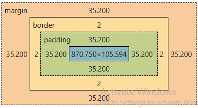

Using the box model from my h1, I feel like this helped me to understand the box model. The box model includes my heading surrounded by padding and adds space within the border. It also shows the margin surrounding the border that adds space from other elements on the page. By adding space to this h1, it allows the title of the page to be known clearly.